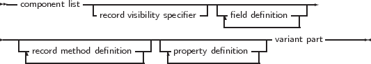

Extended records are in many ways equivalent to objects and to a lesser extent to classes: they are records which have methods associated with them, and properties. Like objects, when defined as a variable they are allocated on the stack. They do not need to have a constructor. Extended records have limitations over objects and classes in that they do not allow inheritance and polymorphism. It is impossible to create a descendant record of a record1.
Why then introduce extended records ? They were introduced by Delphi 2005 to support one of the features introduced by .NET. Delphi deprecated the old TP style of objects, and re-introduced the features of .NET as extended records. Free Pascal aims to be Delphi compatible, so extended records are allowed in Free Pascal as well, but only in Delphi mode.
If extended records are desired in ObjFPC mode, then a mode switch must be used:
Compatibility is not the only reason for introducing extended records. There are some practical reasons for using methods or properties in records:
Defining an extended record is much as defining an object or class:
_________________________________________________________________________________________________________
extended record type

___________________________________________________________________
Some of the restrictions when compared to classes or objects are obvious from the syntax diagram:
Other than that the definition much resembles that of a class or object.
Remark: In the case of a variant record, the Case keyword implicitly starts a var section, meaning class variables or methods are not allowed in the variant part of the record.
The following are few examples of valid extended record definitions:
Note that it is possible to specify a visibility for the members of the record. This is particularly useful for example when creating an interface to a C library: the actual fields can be declared hidden, and more ’pascal’ like properties can be exposed which act as the actual fields. The TTest3 record definition shows that the packed directive can be used in extended records. Extended records have the same memory layout as their regular counterparts: the methods and properties are not part of the record structure in memory.
The TTest4 record definition in the above examples shows that the extended record still has the ability to define a variant part. As with the regular record, the variant part must come last. It cannot contain methods.
1although it can be enhanced using record helpers, more about this in the chapter on record helpers.